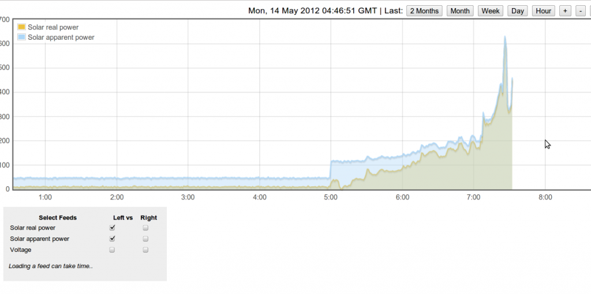

I was excited today, my inverter was fired up for the first time! So I have all my monitoring setup and ready to record this momentous occasion. But the reading coming from my emonTxV3 was over half the value of the reading on the inverter!
The weather is terrible at the moment, so the solar array was only generating 242w, but emon was showing 112w. So I thought I'd just change my calibration constants and I'd be fine.
But I had previously calibrated my grid CT by timing the pulses on the meter, so I thought I would do the same for the solar CT. To my amazement it roughly agreed with the figure from my emonTxV3!
So am I losing 50% on the cable run from the inverter - sounds unlikely, or is the inverter meter 50% out?
I'm not sure how to work out which is the correct value. Any help would be gratefully received.
Allen
Re: Solar PV inverter reading vs generation meter
It sounds like the meter on the inverter is measuring reactive power rather than real power. I believe the EMC filter on the inverter is fundamentally capacitive with only a small resistive part this gives rise to a higher apparent power reading at low PV output (night time). See image below for a data capture from my solar PV system. This reactive power will not be picked up by your billing meter or the emonTx since they are monitoring Real Power. If you are interested in investigating this you can get the emonTx to also post apparent power al well as real power.
If someone understands this better than I do please correct me or improve on my explanation. I would like to get this phenomenon documented on the solar PV application note page. I believe this effect will vary between solar PV inverters depending on their build components and if they are transformer less or not

Re: Solar PV inverter reading vs generation meter
Hi
The 50% loss in the cable and the 50% out in the inverter are both unlikely as you say- but at low power levels some inverters can give misleading readings since there is a level of internal consumption - so you need to know if the power display on the inverter is from the DC input side or the AC output side, with the latter usually being lower than the former. Inverters are in the range of 95% efficient when run at higher levels - so that can mean that at 2000W input the inverter converts 1900W to AC power. It may be that is what is happening here. Just a thought.
Another point - my Solar CT sensor showed a -ve offset when the inverter was definitely 'off' of around 30W, I corrected for that on the input and the Emon display is now closer to the inverter, but still not the same, but I'm waiting for a bit more sun before I delve deeper into it....
Good luck with the new solar!
Re: Solar PV inverter reading vs generation meter
Thanks for both your replies. I would be interested in finding out how to post the apparent power as well as the real power, maybe that would show the difference. The inverter is an Afore HNS3600TL, and it was fitted today by an Afore representative, so he should know what he's doing. When I phoned the office to tell them about a 50% discrepancy, they were not surprised and said the generation meter is what you should use for the real value.
However, I'd like to confirm I'm not losing anything in the cable run from the loft to the meter on the ground floor.
I am also getting negative values now the sun is going down. In fact it is swinging wildly from positive to negative. Is that normal? Looking on the inverter it is also displaying crazy values (presumeably because of the very low output at this time of day).
This is quite a learning curve :)
Re: Solar PV inverter reading vs generation meter
My system here in the US shows about an average of 50W consumption at night. So, my PV output goes negative at night as well. The EmonCMS server simply integrates that consumption at night and in the morning my kwh/d total for PV generation starts at a low negative value until it starts generating. Given that this is real power being consumed I leave it at that and don't try to remove or offset that value. My total solar power generated is the generation minus the operating costs of the inverter, so I don't want to lose track of the losses at night.
Dan
Re: Solar PV inverter reading vs generation meter
As far as I know, all inverters will draw some quiescent current - and it's anybody's guess what the power factor is, hence Glyn's comment. In darkness, that will appear to be energy consumed by the inverter from the grid, hence your negative value for generation. In light, it will be drawn from the array and will appear as a lowered efficiency, which you'll probably never know about.
I refuse to believe you are losing 50% on the cable run. If it's possible to measure the voltage at each end (probably not, but TAKE GREAT CARE if you try, especially if it's d.c. as that can be very nasty) you should find very little difference, and of course the current should be the same at both ends!
The apparent power (VA) should be available in the serial monitor (depends of course on the sketch you're using) and it's a relatively simple matter to add it to the data being sent with a minor change to the emonTx sketch.
Re: Solar PV inverter reading vs generation meter
@Dan - strangely the solar PV output was swinging wildly from positive to negative, but has now settled down (maybe it has switch off completely now). But is now showing a +8w output (not negative). I'm not sure how that can be.
@Robert - I might be able to take the case off the isolating switch at the inverter (on the AC side) and measure a voltage there. I'll look in the morning.
I'm using the emonTxV3_RFM12B_DiscreteSampling sketch. So I'll search around and see if I can work out how it is done.
I guess I was just surprised that the Afore (official) representative in this country didn't bat an eyelid at there being such a huge discrepancy between the value shown on the inverter, compared to the generation meter. At first he thought I was comparing to a 'consumer monitor' and was dismissing that, but I definitely pressed the point that I had measure the power from counting pulses on the meter.
I'm not sure if 100w is too low for an accurate reading.
Another thing I definitely saw (but of cause haven't seen again), is that while sitting in the loft watching the inverter's power reading and using my iPhone to view my dashboard, it went through a period where both reading matched. But then they diverged again. I'll keep checking over the coming days to see if it happens again.
Re: Solar PV inverter reading vs generation meter
"I'm using the emonTxV3_RFM12B_DiscreteSampling sketch. So I'll search around and see if I can work out how it is done."
It's in emonLib. In outline, it waits until near the zero crossing, then samples for 10 cycles. It calculates the averages (power, VA, rms V & I) and returns to the main loop. That sends the data and goes to sleep for 5 s, then it all repeats.
I am about to make some measurements on the emonTx V3. I'd expect it to perform slightly better than the V2, but even so 100 W for the main inputs (CT1-3) is low and I'd expect significant errors from the ADC conversion process. If you mean 100 W is low for your tariff meter, then I think the errors will be creeping in there too, and you'll have to look at the spec. to find out exactly what accuracy you should expect.
Re: Solar PV inverter reading vs generation meter
"@Dan - strangely the solar PV output was swinging wildly from positive to negative, but has now settled down (maybe it has switch off completely now). But is now showing a +8w output (not negative). I'm not sure how that can be."
Using the discrete sampling algorithm gave me wildly swinging values on my PV output at night, bouncing between positive and negative but averaging a negative value somewhere between -50W and -100W. Switching to one of the continuous sampling codes (PV diverter or the EmonLibPro) fixed it and settled the noise way down and now it reads very reliably at night. I am currently using a modified version of the EmonLibPro designed to use the EmonTX V2 and the RF to transmit. I believe I posted the code previously at:
http://openenergymonitor.org/emon/node/2720
Some of the error may be low accuracy at the low end of the measurement range. 200W generation is not a huge amount, and if you are looking at using the standard CTs and burden resisters, you are near the low end of the measurement range (correct me if I am wrong on any of that). Some of the benchmarking showed how the % error creeps up as the value goes down. The continuous sampling seems to handle the lower end range better than the standard sketch, at least in my testing.
Dan
Re: Solar PV inverter reading vs generation meter
As a comparison I have these readings on my SMA inverters
Inverter 1
Inverter reads 5230.8 Kwh Export meter reads 5230.6
Inverter 2
Inverter reads 5086.9 Export meter reads 5074.7
The export meter for inverter 1 is about 2 meters away from it and with inverter 2 its about 75m away.
Re: Solar PV inverter reading vs generation meter
I think the meter on the inverter is probably very inaccurate at low readings. As the light was going down it started to show erratic behaviour, with readings evening jumping up to 500w, which it hadn't shown all day (it's been very overcast today). I think my best bet is to wait for a nice sunny day and a decent reading.
Re: Solar PV inverter reading vs generation meter
Dan: "Using the discrete sampling algorithm gave me wildly swinging values on my PV output at night"
There's no inherent reason why that should be unless the inverter load itself was wildly swinging, and that could indeed be the case if the internal electronics were switching on at intervals to sample the PV output - i.e. it was using exactly the same energy-saving strategy as the emonTx!
Re: Solar PV inverter reading vs generation meter
I think most inverters have SMPSs in them for running their electronics so they can continue to interact thru' their GUI even when the DC-isolator switch in the "Panels Off" position. At night mine goes into an extreme deep sleep mode, puts up "Goodnight" on its LCD, switches off the backlight, LEDs and the LAN port. It's rather like closing the lid on a laptop.
I guess it's possible it regularly wakes up to sniff the panels to see if the sun has come up, but you'd think it'd be pretty trivial to design a CPU-wakeup interrupt sourced from the DC coming to life first thing next morning.
I've not tried it (but hope to soon), but I bet measuring the power going into an Inverter at night is just like measuring the power going into a modern TV in standby....often in the vicinity of 30-80 VARs but < 1W real. When the angle is that close to 90, and the current is that low, it's very difficult to nail the CT-induced phase error, and you can easily flip quadrants if you don't. Although even that you'd expect to be fairly steady state, so maybe Dan's inverter is constantly coming to life.
Re: Solar PV inverter reading vs generation meter
It may be checking to see it it's been islanded while it's been asleep too.
Re: Solar PV inverter reading vs generation meter
My inverter is very much awake the whole time. The inverter is made to be able to support both solar as well as other DC power sources such as battery banks and generators. It has menu items about telling it what hours the generator can run to charge the battery banks, so you don't have to listen to it all night while running small loads like lights and other items like that. In our case, the PV goes first to a bank of batteries then when they are fully charged (99.999% of the time) the DC goes to the inverter which then powers a subpanel of critical loads (natural gas furnace, kitchen and bathroom light and outlets). If the PV output is not enough to supply those needs (such as all night) it imports power from the main house panel. If PV output is more than the subpanel needs it then exports that into the main house panel feeding everything else, and if there is still a surplus, it flows back out to the utility, and my smart meter notes the export and subtracts directly from my import bill (net-metering).
If I lose power to the house, the inverter can power the subpanel loads from the batteries or PV, depending on the loads and time of day. The PV can charge the batteries during the day and run from the batteries at night. So, I have emergency power when everyone else is out. This is not the norm for PV install in our area, as the more folks I talk to indicate that with net-metering, if they lose power they can't use anything, even on a sunny day. It must have cost extra, since the critical loads had to be rewired to a separate sub panel, but the previous owner felt it was worth it. In 1.5 years we only lost power for about 1 minute, so I have not checked it out long term, but I feel better that we won't lose heat if the power goes out during a winter storm.
I believe I discussed it further on this thread:
http://openenergymonitor.org/emon/node/2430
Dan
Re: Solar PV inverter reading vs generation meter
as the more folks I talk to indicate that with net-metering, if they lose power they can't use anything, even on a sunny day.
Yes, that's the norm here too. The problem is a lot easier when the inverter can rely on the grid as an infinitely big sink for any excess power. Once the grid has gone off-line, you can't go dumping power into it for fear of killing the utility repair man. So then the inverter has a big problem: big DC watts coming off the roof and a varying local AC load it's trying to match. It can tweak the PV power a bit by playing around with the MPPT settings, but there are limits.
It'd be interesting to know what yours does when the grid's gone out, the batteries are fully charged, it's a very sunny day, and the critical load draw is way less than what the panels are putting out. Is there a big resistor somewhere it can dump into? Failing that I guess it could just cycle the PV panels on/off with a nice long duty cycle... let it run off batteries until their voltage starts to drop, then turn the panels back on to charge them back up again.
Re: Solar PV inverter reading vs generation meter
My SMA backups increase the off grid frequency which signals the inverters to throttle back.